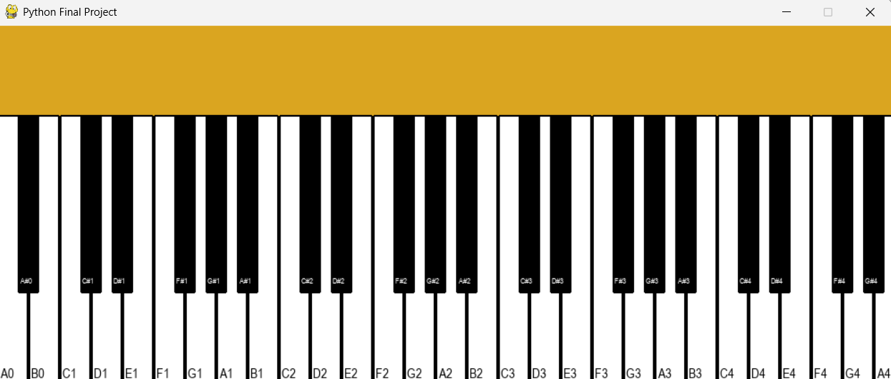

Download CV
Projects
A GUI provided for a final project in the creation of a fully-functional Piano program. Uses a variety of different libraries and sound clips to encapsulate the feeling of a piano along with personal customization. Meant to have a fully user-friendly interface, along with the usage of object-oriented programming for back-end capabilities.

A full scale portfolio website detailing every part of my repertoire. Showcases projects, ongoing and upcoming, along with previous experience, contact information, links to my work, and a downloadable CV.
Contributed to the development Full-Stack academic search engine platform, handling both frontend and backend functionalities. Collaborated with a remote team ensure the platform's timely completion, whilst learning the inner workings of Apache frameworks such as Spark, and Solr, completely self-taught as well.
Designed and implemented a Python-based order tracking system, reducing manual errors caused by inefficiency, saving up to 20% of time taken with older programs with the help of a small team of other experienced software developers. Optimized counterproductive scripts written in PHP and C into Python and developed new web scraping tools using a vast amount of libraries provided such as Selenium, Playwright, and BeautifulSoup for monthly orders of products needed for the establishment. Given the opportunity to learn early about API development and server handling from upper-devs.